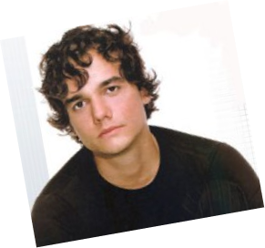
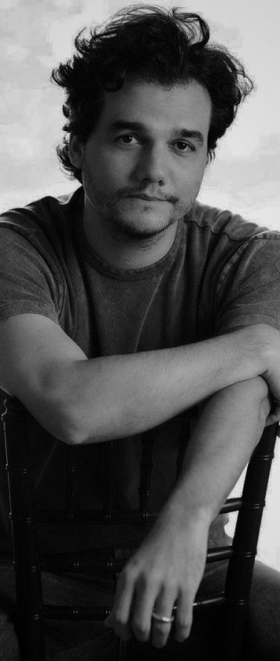

Infância e
Educação
Wagner Maniçoba de
Moura. ݁₊ ⊹ . ݁˖ . ݁

Juventude✰⋆˙
Foi na adolescência e juventude que Wagner começou a desenvolver sua paixão por música e teatro. Ele sempre foi um grande fã de rock e chegou a tocar em bandas locais, demonstrando um talento nato para a performance.
